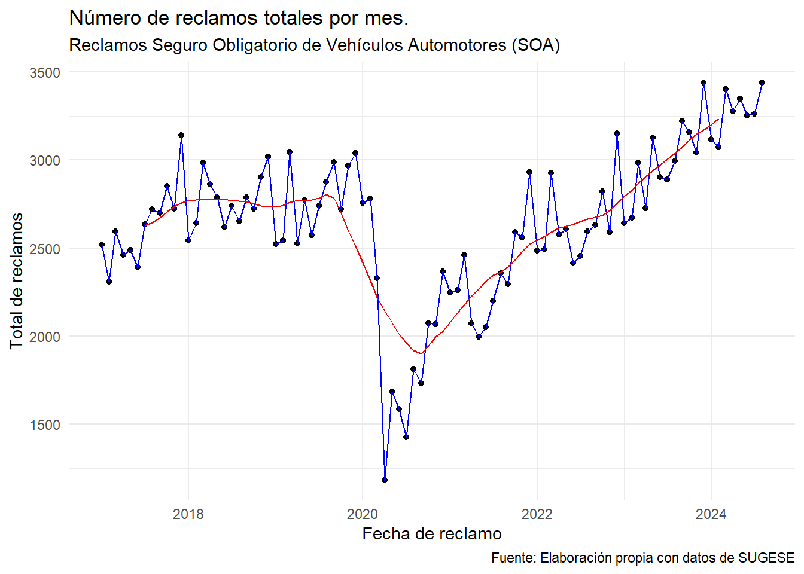
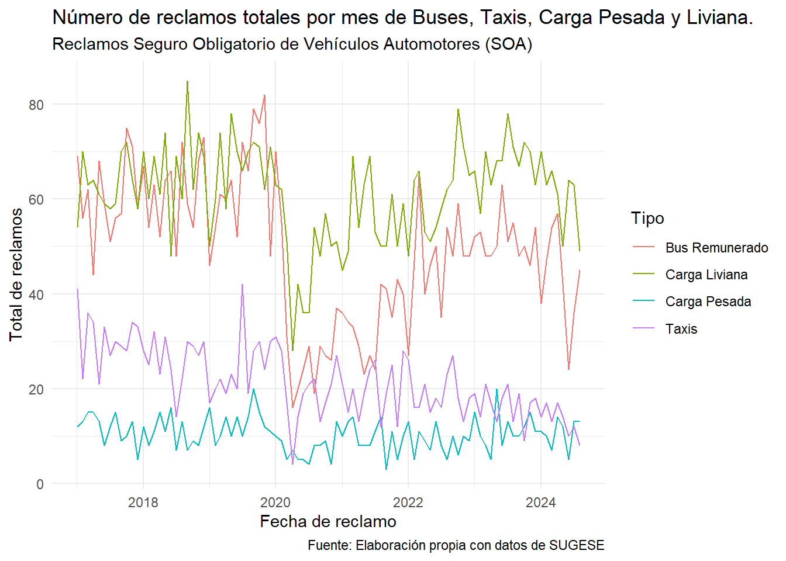

library(tidyverse)
library(knitr)
library(readr)
library(readxl)
library(lubridate)
library(dplyr)
library(TTR)
library(openxlsx)
library(nortest)
library(readxl)
library(xtable)
library(fitdistrplus)
library(ggplot2)5 Bitacora 4
5.1 Parte de planificación
5.1.1 Fichas de resultados
# Cargar las librerías necesarias
library(knitr)
library(kableExtra)
# Datos de la tabla 1
tabla1 <- data.frame(
Encabezado = c(
"Nombre de su hallazgo o resultado:",
"Resumen en una oración:",
"Principal característica:",
"Problemas o posibles desafíos:",
"Resumen en un párrafo:"
),
Contenido = c(
"Visualización de cantidad de reclamos según tasa de cambio mensual.",
"Se determina cuáles meses son más representativos en el año para el SOA.",
"Analizando la información se tiene que enero y diciembre son los meses mínimos y máximo, respectivamente.",
"Se necesitaría respaldar el hallazgo del análisis exploratorio de datos con alguna prueba estadística.",
"Mediante el análisis exploratorio de datos se tiene que los meses de enero representan menos reclamos y los meses de diciembre representan mayor cantidad de reclamos, comparativamente entre los otros meses de año."
)
)
# Generar la tabla 1
tabla1 %>%
kable(
format = "html",
col.names = c("Encabezado", "Contenido"),
caption = "Ficha de resultados 1"
) %>%
kable_styling(
bootstrap_options = c("striped", "hover", "condensed"),
full_width = FALSE
)| Encabezado | Contenido |
|---|---|
| Nombre de su hallazgo o resultado: | Visualización de cantidad de reclamos según tasa de cambio mensual. |
| Resumen en una oración: | Se determina cuáles meses son más representativos en el año para el SOA. |
| Principal característica: | Analizando la información se tiene que enero y diciembre son los meses mínimos y máximo, respectivamente. |
| Problemas o posibles desafíos: | Se necesitaría respaldar el hallazgo del análisis exploratorio de datos con alguna prueba estadística. |
| Resumen en un párrafo: | Mediante el análisis exploratorio de datos se tiene que los meses de enero representan menos reclamos y los meses de diciembre representan mayor cantidad de reclamos, comparativamente entre los otros meses de año. |
# Datos de la tabla 2
tabla2 <- data.frame(
Encabezado = c(
"Nombre de su hallazgo o resultado:",
"Resumen en una oración:",
"Principal característica:",
"Problemas o posibles desafíos:",
"Resumen en un párrafo:"
),
Contenido = c(
"Función densidad observada de los reclamos.",
"Se ejemplifica gráficamente los reclamos de todos los vehículos.",
"La frecuencia de los datos tienen una gran cantidad de acumulación alrededor de los 2300 y los 2800 reclamos por mes.",
"Se necesitaría respaldar el hallazgo del análisis exploratorio de datos con alguna prueba estadística.",
"Se observa en dónde se están concentrando más los datos, hacia dónde se están acumulando, si se pueden observar colas livianas o pesadas y demás características de las funciones densidades que permiten discernir un comportamiento muestral para así poder dar un escenario más claro de comportamiento a la cantidad de reclamos ya como variable aleatoria."
)
)
# Generar la tabla 2
tabla2 %>%
kable(
format = "html",
col.names = c("Encabezado", "Contenido"),
caption = "Ficha de resultados 2"
) %>%
kable_styling(
bootstrap_options = c("striped", "hover", "condensed"),
full_width = FALSE
)| Encabezado | Contenido |
|---|---|
| Nombre de su hallazgo o resultado: | Función densidad observada de los reclamos. |
| Resumen en una oración: | Se ejemplifica gráficamente los reclamos de todos los vehículos. |
| Principal característica: | La frecuencia de los datos tienen una gran cantidad de acumulación alrededor de los 2300 y los 2800 reclamos por mes. |
| Problemas o posibles desafíos: | Se necesitaría respaldar el hallazgo del análisis exploratorio de datos con alguna prueba estadística. |
| Resumen en un párrafo: | Se observa en dónde se están concentrando más los datos, hacia dónde se están acumulando, si se pueden observar colas livianas o pesadas y demás características de las funciones densidades que permiten discernir un comportamiento muestral para así poder dar un escenario más claro de comportamiento a la cantidad de reclamos ya como variable aleatoria. |
# Datos de la tabla 3
tabla3 <- data.frame(
Encabezado = c(
"Nombre de su hallazgo o resultado:",
"Resumen en una oración:",
"Principal característica:",
"Problemas o posibles desafíos:",
"Resumen en un párrafo:"
),
Contenido = c(
"Resultado prueba chi cuadrado.",
"Se descartan las distribuciones Poisson y Geométrica para ajustar los datos.",
"Se utilizan métodos estadísticos para determinar la distribución de probabilidad que mejor estima los reclamos.",
"Se necesitaría respaldar el hallazgo con más referencias bibliográficas.",
"Mediante un proceso generador de datos se descartan las distribuciones de probabilidad Poisson y Geométrica para concluir que la Binomial Negativa es la que mejor ajusta los datos en estudio."
)
)
# Generar la tabla 3
tabla3 %>%
kable(
format = "html",
col.names = c("Encabezado", "Contenido"),
caption = "Ficha de resultados 3"
) %>%
kable_styling(
bootstrap_options = c("striped", "hover", "condensed"),
full_width = FALSE
)| Encabezado | Contenido |
|---|---|
| Nombre de su hallazgo o resultado: | Resultado prueba chi cuadrado. |
| Resumen en una oración: | Se descartan las distribuciones Poisson y Geométrica para ajustar los datos. |
| Principal característica: | Se utilizan métodos estadísticos para determinar la distribución de probabilidad que mejor estima los reclamos. |
| Problemas o posibles desafíos: | Se necesitaría respaldar el hallazgo con más referencias bibliográficas. |
| Resumen en un párrafo: | Mediante un proceso generador de datos se descartan las distribuciones de probabilidad Poisson y Geométrica para concluir que la Binomial Negativa es la que mejor ajusta los datos en estudio. |
5.2 Parte Escrita
5.2.1 Resumen
Esta investigación examina la evolución de la cantidad de reclamos del seguro obligatorio automotor en Costa Rica durante el período 2017-2024, empleando pruebas estadísticas clave como Kolmogorov-Smirnov, Chi-cuadrado. A través de los años han existido tendencias y particularidades sobre el comportamiento de esta cartera, las cuales se pretenden exponer mediante un análisis exploratorio de datos. El análisis con Kolmogorov-Smirnov busca identificar si existen distribuciones de probabilidad las cuales nos permitan ajustar los datos de historiales. La prueba de Chi-cuadrado se utiliza para fortalecer aún más los hallazgos señalados por el análisis descriptivo. Por último, la investigación subraya la necesidad de mantener la cobertura obligatoria del seguro para ser un soporte universal de la atención médica cuando suceden accidentes de tránsito.
Palabras clave: Seguro, análisis, frecuencia, evolución, reclamos.
5.2.2 Introducción
La gestión del riesgo asociado a los seguros de automóviles, especialmente bajo esquemas obligatorios como el Seguro Obligatorio de Automotores (SOA) en Costa Rica, representa un desafío significativo para las entidades aseguradoras. El SOA es esencial no solo para cubrir gastos médicos derivados de accidentes de tráfico, sino también como componente clave del portafolio del Instituto Nacional de Seguros (INS). Este contexto subraya la necesidad de emplear metodologías actuariales avanzadas que promuevan la sostenibilidad financiera del seguro. Los análisis internacionales destacan que la frecuencia de reclamos varía según factores como: - Edad y experiencia del conductor: Los conductores jóvenes presentan una mayor frecuencia de reclamos, mientras que aquellos con más experiencia muestran una disminución progresiva en su tasa de siniestralidad Munden (1958). - Tipo de uso del vehículo: Los automóviles utilizados para fines comerciales tienden a tener tasas de reclamos más altas que los vehículos de uso personal. - Geografía: La ubicación donde se utiliza y guarda el vehículo afecta significativamente la siniestralidad. En áreas urbanas, los accidentes son más frecuentes debido a la densidad del tráfico Scurfield (1968).
Por otro lado, Arias (2023) destaca la importancia de seleccionar modelos estadísticos que se ajusten adecuadamente a las características específicas de los datos de siniestralidad y de los vehículos asegurados. Subrayó la utilidad de aplicar distribuciones compuestas y modelos de regresión para abordar la complejidad inherente a los datos de seguros y mejorar la precisión en la estimación de pérdidas y la determinación de primas. En el desarrollo del proyecto se ajustó la cantidad de reclamos del seguro con una distribución de probabilidad binomial negativa. ## Metodología A continuación, se presenta una descripción detallada de los datos, los cuales serán utilizados para realizar pruebas estadísticas y responder a la pregunta del tema:
- Fuente de información: Repositorio de estadísticas de la Superintendencia General de Seguros de Costa Rica.
- Contexto temporal y espacial de los datos: De enero de 2017 a agosto de 2024 en Costa Rica.
- Facilidad de obtener la información: Alta. El repositorio presenta una fácil accesibilidad a los datos y una amplia exposición de los mismos.
- Población de estudio: Accidentes reportados al Instituto Nacional de Seguros los cuales amparan el Seguro Obligatorio Automotor.
- Unidad estadística o individuos: Cada accidente reportado al Instituto Nacional de Seguros los cuales amparan el Seguro Obligatorio Automotor.
Los datos utilizados en esta investigación corresponden al número mensual de reclamos al Seguro Obligatorio de Vehículos Automotores (SOA) en Costa Rica. En particular, estos comprenden el número de accidentes de tránsito en los que se involucra al menos un vehículo asegurado y en el que se da la lesión de al menos una de las personas involucradas. La frecuencia de los datos es mensual y se tienen desde enero del 2017 hasta Agosto del 2024. ### Tabla 1: Datos por tipo de vehículo
| Fecha | Particular | Carga Liviana | Carga Pesada | Motos | Taxis | Equipo Especial |
|---|---|---|---|---|---|---|
| 01/01/2017 | 516.00 | 54.00 | 12.00 | 1394.00 | 41.00 | 1.00 |
| 01/02/2017 | 471.00 | 70.00 | 13.00 | 1294.00 | 22.00 | 1.00 |
| 01/03/2017 | 525.00 | 63.00 | 15.00 | 1481.00 | 36.00 | 2.00 |
| 01/04/2017 | 526.00 | 64.00 | 15.00 | 1385.00 | 34.00 | 0.00 |
| 01/05/2017 | 604.00 | 61.00 | 13.00 | 1345.00 | 21.00 | 1.00 |
| 01/06/2017 | 539.00 | 59.00 | 8.00 | 1335.00 | 33.00 | 0.00 |
5.2.3 Tabla 2: Datos adicionales
| Equipo Especial | Autobuses remunerado | Autobuses uso particular | Bicimotos, cuadraciclos y UTV | No identificado | Total |
|---|---|---|---|---|---|
| 1.00 | 69.00 | 0.00 | 0.00 | 431.00 | 2518.00 |
| 1.00 | 56.00 | 0.00 | 0.00 | 383.00 | 2310.00 |
| 2.00 | 62.00 | 0.00 | 0.00 | 411.00 | 2595.00 |
| 0.00 | 44.00 | 0.00 | 0.00 | 392.00 | 2460.00 |
| 1.00 | 68.00 | 0.00 | 0.00 | 374.00 | 2487.00 |
| 0.00 | 59.00 | 0.00 | 0.00 | 356.00 | 2389.00 |
##Metodología #### Prueba chi-cuadrado de Pearson-Fisher
La prueba chi-cuadrado de Pearson-Fisher Fisher (1922), mejora la prueba de Pearson al permitir la selección del mejor valor \(\theta\) para la hipótesis nula y definir una partición óptima del espacio muestral \(\mathcal{X}\). Esta adaptación considera una muestra aleatoria \(X_1, X_2, \dots, X_n\) y compara la distribución observada con una distribución teórica dentro de una familia parametrizada \(\mathcal{F}\). El estadístico de prueba chi-cuadrado de Pearson-Fisher se define como:
\[ Q_n^{FP}= \sum_{j=1}^m \frac{(N_j - n p_j(\hat{\theta}(X)))^2}{n p_j(\hat{\theta}(X))} \]
donde \(\hat{\theta}(X)\) es el estimador de máxima verosimilitud ajustado para datos agrupados.
5.2.3.1 Prueba de Kolmogorov-Smirnov
Según DeGroot (2002), la prueba de Kolmogorov-Smirnov se utiliza para determinar si dos conjuntos de datos tienen la misma distribución, esto mediante la comparación de la función de distribución acumulada empírica de los datos muéstrales con respecto a la distribución esperada, con lo cual se define una Hipótesis nula \([H_0: f(X)= f^*(x)]\) y la hipótesis alternativa \([H_1: f(X) \neq f^*(x)]\) con \(f(x)\) la función de distribución desconocida asociada a un conjunto de observaciones \(X_1, X_2, ..., X_n\) y \(f^*(x)\) es la función de distribución desconocida asociada a un conjunto observaciones \(Y_1,Y_2, ...,Y_m\).
Con \(f_n(x)\) la función de distribución calculada a partir de los valores \(X_1, ..., X_n\) y $f_m^*(x) $ la función de distribución calculada a partir de los valores de \(Y_1, ...,Y_m\). de esta manera se define el estadístico \(D_{nm}\) que representa la máxima diferencia entre la función de distribución acumulada (c.d.f) de la muestra observada y la teórica:
\[ D_{nm} = \sup_{x \in R} \lvert f_n(x) - f_m^*(x) \rvert \]
##Resultados
Para poder cumplir con los objetivos del proyecto es necesario hacer un análisis completo de los datos. Primeramente es vital presentar los siguientes cuadros de estadísticos y dispersión para notar como se han comportado los datos. Como se mencionó anteriormente, dado que las mayores acumulaciones de números de reclamos se encuentran ubicados en las categorías de particular y motos, resulta pertinente analizar las medias y las desviaciones estandar de las mismas, en comparación con las de a variable total. Este análisis se realizó tanto categorizable anual, como mensual.
library(knitr)
library(kableExtra)
tabla_ano <- data.frame(
Año = c(2017, 2018, 2019, 2020, 2021, 2022, 2023),
`μ-Total` = c(2627.58, 2771.58, 2775.75, 1982.67, 2334.75, 2564.86, 2764.21),
`μ-Particular` = c(567, 597.25, 634.08, 384.75, 478.25, 511.86, 544.32),
`μ-Motos` = c(1466, 1567.67, 1572.42, 1179.08, 1415.25, 1516.71, 1654.29),
`sd-Total` = c(224.92, 148.55, 204.02, 505.68, 267.34, 172.46, 187.33),
`sd-Particular` = c(55.02, 43.85, 56.31, 129.69, 60.88, 37.38, 39.44),
`sd-Motos` = c(129.44, 110.23, 116.88, 272.48, 166.19, 95.78, 91.21)
)
# Crear la tabla
tabla_ano %>%
kable(
format = "html",
caption = "Reclamos por SOA en Costa Rica: Medias (μ) y Desviaciones (sd) agregadas, por año y según vehículo, de enero 2017 a diciembre 2023.",
align = "c",
digits = 2
) %>%
kable_styling(
bootstrap_options = c("striped", "hover", "condensed"),
full_width = FALSE
) %>%
add_footnote("Fuente: Elaboración propia con datos de SUGESE.", notation = "none")| Año | μ.Total | μ.Particular | μ.Motos | sd.Total | sd.Particular | sd.Motos |
|---|---|---|---|---|---|---|
| 2017 | 2627.58 | 567.00 | 1466.00 | 224.92 | 55.02 | 129.44 |
| 2018 | 2771.58 | 597.25 | 1567.67 | 148.55 | 43.85 | 110.23 |
| 2019 | 2775.75 | 634.08 | 1572.42 | 204.02 | 56.31 | 116.88 |
| 2020 | 1982.67 | 384.75 | 1179.08 | 505.68 | 129.69 | 272.48 |
| 2021 | 2334.75 | 478.25 | 1415.25 | 267.34 | 60.88 | 166.19 |
| 2022 | 2564.86 | 511.86 | 1516.71 | 172.46 | 37.38 | 95.78 |
| 2023 | 2764.21 | 544.32 | 1654.29 | 187.33 | 39.44 | 91.21 |
| Fuente: Elaboración propia con datos de SUGESE. |
Después del análisis de las variables estadísticas de los datos agrupados por año y por mes, es necesario comprobar ahora por el total de reclamos por tipo de vehículo durante todo el período muestral de los datos; ya que este tipo de variables ayudan como estimadores para el comportamiento de los datos, así como posibles parámetros de modelación de la distribución buscada como objetivo del proyecto.
tabla_mes <- data.frame(
Mes = c("ene", "feb", "mar", "abr", "may", "jun", "jul", "ago", "sep", "oct", "nov", "dic"),
`μ-Total` = c(2303, 2340.75, 2530.25, 2221.5, 2321.38, 2217.13, 2322, 2387.86, 2409.71, 2538.57, 2500.14, 2750.28),
`μ-Particular` = c(521, 512.5, 564.5, 499.88, 543.38, 496.25, 511.63, 527.71, 561.71, 589.71, 557.71, 597.14),
`μ-Motos` = c(1290.75, 1331.62, 1440.88, 1252.75, 1275.88, 1262.12, 1342.12, 1359.71, 1344.86, 1407.43, 1441, 1597.14),
`sd-Total` = c(412.41, 356.85, 441.99, 540.8, 427.79, 371.41, 495.24, 417.12, 457.66, 352.1, 398.53, 415.28),
`sd-Particular` = c(57.54, 44.96, 80.87, 135.34, 124.5, 88.71, 136.29, 117.19, 112.09, 89.55, 83.96, 71.79),
`sd-Motos` = c(269.87, 256.91, 285.06, 290.77, 229.64, 239.77, 287.21, 252.56, 253.33, 201.55, 246.42, 262.72)
)
# Crear la tabla
tabla_mes %>%
kable(
format = "html",
caption = "Reclamos por SOA en Costa Rica: Medias (μ) y Desviaciones (sd), por mes y según vehículo, de enero 2017 a diciembre 2023.",
align = "c",
digits = 2
) %>%
kable_styling(
bootstrap_options = c("striped", "hover", "condensed"),
full_width = FALSE
) %>%
add_footnote("Fuente: Elaboración propia con datos de SUGESE.", notation = "none")| Mes | μ.Total | μ.Particular | μ.Motos | sd.Total | sd.Particular | sd.Motos |
|---|---|---|---|---|---|---|
| ene | 2303.00 | 521.00 | 1290.75 | 412.41 | 57.54 | 269.87 |
| feb | 2340.75 | 512.50 | 1331.62 | 356.85 | 44.96 | 256.91 |
| mar | 2530.25 | 564.50 | 1440.88 | 441.99 | 80.87 | 285.06 |
| abr | 2221.50 | 499.88 | 1252.75 | 540.80 | 135.34 | 290.77 |
| may | 2321.38 | 543.38 | 1275.88 | 427.79 | 124.50 | 229.64 |
| jun | 2217.13 | 496.25 | 1262.12 | 371.41 | 88.71 | 239.77 |
| jul | 2322.00 | 511.63 | 1342.12 | 495.24 | 136.29 | 287.21 |
| ago | 2387.86 | 527.71 | 1359.71 | 417.12 | 117.19 | 252.56 |
| sep | 2409.71 | 561.71 | 1344.86 | 457.66 | 112.09 | 253.33 |
| oct | 2538.57 | 589.71 | 1407.43 | 352.10 | 89.55 | 201.55 |
| nov | 2500.14 | 557.71 | 1441.00 | 398.53 | 83.96 | 246.42 |
| dic | 2750.28 | 597.14 | 1597.14 | 415.28 | 71.79 | 262.72 |
| Fuente: Elaboración propia con datos de SUGESE. |
Parte importante de analizar la media radica en observar c'omo se estarían comportando los datos si todos fueran iguales, lo que permite darse una idea de la cantidad general de reclamos mensuales que hay, y a partir de ahí poder analizar la varianza para examinar de una forma más realista los datos y ver aproximadamente como se están alejando estos valores de la estimación hipotética de igualdad. Es por esto que dada la desviación estándar del número de reclamos de 427.09 se puede decir que los datos están separados de la media en un número relativamente alto, por lo que tiene una volatilidad elevada que deberá tomarse en cuenta al momento de modelar su distribución.
Para fortalecer el análisis, a continuación se presentan los siguientes gráficos:
library(readxl)
reclamos <- read_excel("Reporte_Siniestralidad_SOA.xlsx", sheet = "Accidentes")
reclamos$Fechas <- seq(as.Date("2017-01-01"), as.Date("2024-08-01"), by = "month")
anos <- c(rep(2017, 12), rep(2018, 12), rep(2019, 12), rep(2020, 12),
rep(2021, 12), rep(2022, 12), rep(2023, 12), rep(2024, 8))
Mes2 <- c(rep(1:12, 8))
Mes <- Mes2[1:(length(Mes2) - 4)]
reclamos$Year <- anos
reclamos$Mes <- Mes
#Los valores mensuales permiten ver estacionalidad y los anuales tendencia.
reclamoss <- head(reclamos)
reclamos2 <- reclamoss[,1:7]
reclamos3 <- reclamoss[,7:15]
ggplot(reclamos)+geom_point(aes(x=Fecha, y=Total))+geom_line(aes(x=Fecha, y=Total), color="blue")+geom_line(aes(x=Fecha, y=decompose(ts(Total, start = c(2015, 1), frequency = 12), type="multiplicative")$trend), colour = "red")+labs(title="Número de reclamos totales por mes.",subtitle = "Reclamos Seguro Obligatorio de Vehículos Automotores (SOA)",caption = "Fuente: Elaboración propia con datos de SUGESE")+
xlab("Fecha de reclamo")+
ylab("Total de reclamos") + theme_minimal()
El primer gráfico se puede visualizar el número de reclamos totales por mes para el periodo en estudio. Para el periodo de 2017 a principios 2020 se puede notar un comportamiento estable donde los totales rondan a los 2750 reclamos. Posteriormente, por el efecto del COVID-19 y las restricciones de circulación, los reclamos caen a menos de 1000. Para finales del 2020 se nota un crecimiento gradual de los reclamos hasta llegar a niveles prepandémicos para principios del 2022. A partir del 2022 se nota un mayor crecimiento (representando la mayor cantidad de reclamos mensuales para este periodo) para llegar al número más alto en el mes de agosto de 2024.
ggplot(
pivot_longer(
dplyr::select(reclamos, Motos, Particular, Fecha),
cols = c("Particular", "Motos"),
names_to = "Tipo",
values_to = "Reclamos"
),
aes(x = Fecha, y = Reclamos, colour = Tipo)
) +
geom_line() +
geom_point() +
labs(
title = "Reclamos mensuales al SOA, vehículos particulares y motos.",
caption = "Fuente: Elaboración propia con datos de SUGESE"
) +
xlab("Fecha de reclamo") +
ylab("Total de reclamos") +
theme(legend.position = "bottom") +
scale_color_hue(labels = c("Motos", "Auto Particular")) +
theme(
legend.background = element_rect(fill = "lightblue", colour = 1),
legend.title = element_text(
family = "Roboto",
color = "blue",
size = 10,
face = 2
)
)+ theme_minimal()
Para esclarecer el análisis es necesario notar la diferencia entre los automotores más numerosos según su tipo: vehículo particular y motocicleta. Se evidencia una mayor cantidad total de reclamos para las motocicletas, en contraste con los vehículos particular. La razón de tal distinción es por el alto riesgo que significa manejar en motocicleta (mayor exposición física, menor estabilidad si sucede algún imprevisto en carretera).
ggplot(
pivot_longer(
dplyr::select(reclamos, Fecha, Taxis, Carga_Liviana, Carga_Pesada, Bus_remunerado),
cols = c("Taxis", "Carga_Liviana", "Carga_Pesada","Bus_remunerado"),
names_to = "Tipo",
values_to = "Reclamos"
),
aes(x = Fecha, y = Reclamos, colour = Tipo)
) +
geom_line() +
labs(
title = "Número de reclamos totales por mes de Buses, Taxis, Carga Pesada y Liviana.",
subtitle = "Reclamos Seguro Obligatorio de Vehículos Automotores (SOA)",
caption = "Fuente: Elaboración propia con datos de SUGESE"
) +
xlab("Fecha de reclamo") +
ylab("Total de reclamos") +
theme(legend.position = "bottom") +
scale_color_hue(labels = c("Bus Remunerado", "Carga Liviana", "Carga Pesada", "Taxis")) +
theme(
legend.background = element_rect(fill = "lightblue", colour = 1),
legend.title = element_text(
family = "Roboto",
color = "blue",
size = 10,
face = 2
)
)+ theme_minimal()
Por otro lado, los otros tipos de vehículos presentan una cantidad de reclamos menor y más uniforme entre ellos. Por tal razón es mejor agruparlos aparte de las motos y los particulares. El vehículo de carga liviana presenta mayor cantidad de reclamos mientras que carga pesada la menor cantidad. Esto se puede atribuir a que, generalmente, los conductores de carga pesada deben de tener mayor habilidad conductora para manejar tales vehículos automotores.
ggplot(mutate(reclamos, Year = as.character(Year))) +
geom_line(aes(
x = as.factor(Mes),
y = (Total - lag(Total)) / lag(Total),
color = Year,
group=Year
), size = 3) +
facet_wrap(~Year, ncol = 4)+
labs(title = "Tasa de cambio mensual de reclamos al SOA",
caption = "Fuente: Elaboración propia con datos de SUGESE.") +
xlab("Mes de reclamo") +
# scale_x_discrete(
# labels = c(
# "Enero",
# "Febrero",
# "Marzo",
# "Abril",
# "Mayo",
# "Junio",
# "Julio",
# "Agosto",
# "Setiembre",
# "Octubre",
# "Noviembre",
# "\ \ Diciembre"
# )
# ) +
ylab("Tasa de cambio") +
cowplot::theme_minimal_hgrid()+
theme(legend.position = "none")En esta figura se muestran la tasas de cambio mensual en el numero de reclamos al SOA. Para el mes de enero, en todos los años, se visualizan tasas levemente menores. Por otro lado, se distinguen comportamientos atípicos para el mes de abril de 2020 (la tasa de cambio más baja) y para mayo de 2020 (la tasa de cambio más alta). Para el resto de meses se tiene un comportamiento homogéneo.
ggplot(mutate(reclamos, Year = as.character(Year), Mes = as.integer(Mes) ))+geom_point(aes(x=Mes, y=Total, color=Year))+
geom_line(aes(x=Mes, y=Total, color=Year))+labs(title="Número de reclamos totales por año",
subtitle = "Reclamos Seguro Obligatorio de Vehículos Automotores (SOA)",
caption = "Fuente: Superintendencia Nacional de Seguros(SUGESE)")+
xlab("Mes de reclamo") +
ylab("Total de reclamos")+theme(legend.position="bottom") + theme_minimal()
Como un primer intento de modelación de la distribución de la cantidad de reclamos mensuales es importante analizar cómo se comportan empíricamente la densidad de los datos y la función acumulada, con el objetivo de compararla con distribuciones ya existentes, especialmente con la Poisson y la binomial negativa. Para el caso de la función densidad observada en el siguiente gráfico, vemos que la frecuencia de los datos tienen una gran cantidad de acumulación alrededor de los \(2300\) y los \(2800\) reclamos por mes, además a esto un comportamiento importante de destacar es que alrededor de los 2000 hay un estancamiento en la densidad lo que podría indicar una probabilidad en igualdad para los reclamos en este intervalo. La importancia de analizar este gráfico radica en observar en dónde se están concentrando más los datos, hacia dónde se están acumulando, si se pueden observar colas livianas o pesadas y demás características de las funciones densidades que permiten discernir un comportamiento muestral para así poder dar un escenario más claro de comportamiento a la cantidad de reclamos ya como variable aleatoria.
ggplot(reclamos, aes(x = Total)) +
geom_density(color = "darkred", size = 1) +
labs(
title = "Reclamos Seguro Obligatorio de Vehículos Automotores (SOA)",
x = "Número de reclamos mensual",
y = "Densidad"
) +
theme_minimal()Para el caso de la función acumulada empírica observada en el siguiente gráfico, podemos ver que el comportamiento es muy similar a las funciones distribuciones conocidas discretas; sin embargo, cabe destacar que esta función para valores pequeños entre 0 y aproximadamente 2000 tiene un comportamiento muy distante para cada valor acumulado, pero a partir de, aproximadamente, el valor 2250 se va haciendo mucho menor la diferencia entre cada valor de la función acumulada.
a<-ggplot(reclamos, aes(x = Total)) +
geom_density(color="#8B0A50")+
labs(title="Costa Rica: Densidad del número total de reclamos por mes entre \n Enero 2017 y Agosto 2024",
subtitle = "Reclamos Seguro Obligatorio de Vehículos Automotores (SOA)",
caption = "Fuente: Superintendencia General de Seguros(SUGESE)")+
xlab("Número de reclamos mensual") +
ylab("Densidad")+theme(legend.position="bottom")+ theme_minimal()
plot(ecdf(reclamos$Total),main = "Costa Rica, función de acumulación empírica del número total \n de reclamos por mes entre Enero 2017 y Agosto 2024", sub="Fuente: Superintendencia General de Seguros(SUGESE)",xlab="Número de Reclamos Mensual", ylab="Distribución Empírica",cex.main = 0.9,cex.lab=0.8,cex.sub =0.7,col="#8B0A50")Resumiendo los resultados
# Cargar las librerías necesarias
library(knitr)
library(kableExtra)
# Datos de la tabla
tabla_ks <- data.frame(
Distribución = c("Poisson", "Normal", "Binomial Negativa", "Exponencial"),
`P Valor` = c(0, 0.32, 0.09, 0),
Estimador = c(1, 0.09, 0.12, 0.46)
)
# Crear la tabla con kable
tabla_ks %>%
kable(
format = "html", # Cambia a "latex" si necesitas PDF
col.names = c("Distribución", "P Valor", "Estimador"),
caption = "Resultados prueba Kolmogorov-Smirnov",
align = "c",
digits = 2
) %>%
kable_styling(
bootstrap_options = c("striped", "hover", "condensed"),
full_width = FALSE
) %>%
footnote(
general = "Aunque el valor se representa como cero, el valor real que se obtuvo es muy cercano a cero.",
general_title = "Nota:",
footnote_as_chunk = TRUE
)| Distribución | P Valor | Estimador |
|---|---|---|
| Poisson | 0.00 | 1.00 |
| Normal | 0.32 | 0.09 |
| Binomial Negativa | 0.09 | 0.12 |
| Exponencial | 0.00 | 0.46 |
| Nota: Aunque el valor se representa como cero, el valor real que se obtuvo es muy cercano a cero. |
A un nivel de significancia de \(\alpha = 0.05\), se obtiene que, para la Poisson, la exponencial y la gamma se rechaza la hipótesis nula de que los datos se comportan como dichas distribuciones, dado el valor p obtenido. Dado que los p-valores en los casos de la Normal y la Binomial Negativa son mayores al \(\alpha\) establecido se posee suficiente evidencia para asegurar que el proceso generador de los datos viene de las mismas. El que ambas distribuciones se acoplen a los datos puede justificarse por el hecho de que existe una relación entre la distribución normal y la binomial negativa. Sabemos que esta última se puede ver como la suma de k variables aleatorias geométricas. Además, por el TLC, \(\frac{\sum_{i=1}^k X_i - n\mu}{\theta \sqrt{k}} \sim N(0,1)\), con lo que se obtiene que \(\sum_{i=1}^k X_i \sim N(\frac{k}{\pi}, k \frac{1- \pi}{\pi^2})\). ### Comparacion de las pruebas Dado que de todas las distribuciones testeadas por medio de las dos diferentes pruebas de hipótesis planteadas, solamente dos distribuciones lograron ser aceptadas con un nivel de confianza \(\alpha=5\%\) se procede a presentar y analizar los resultados. Las distribuciones que resultaron significativas fueron la binomial negativa con parámetros de tamaño \(32.29\) y \(\mu=2648.128\) por lo que el parámetro de probabilidad de éxito normalizado es \(p=1-\dfrac{2648.128}{2648.128+32.29}\approx 0.01204\), y la normal con parámetros \(\mu =2648.0869\) y \(\sigma=437.77\), todos estimados por el método de máxima verosimilitud.
# Cargar librerías necesarias
library(ggplot2)
library(dplyr)
# Datos empíricos simulados
set.seed(123)
datos <- rnorm(100, mean = 2648.0869, sd = 437.77) # Ejemplo de datos empíricos
# Crear la distribución empírica
ecdf_empirica <- ecdf(reclamos$Total) # Función de distribución empírica
# Crear un rango de valores para evaluar las distribuciones
x <- seq(min(reclamos$Total) - 100, max(reclamos$Total) + 100, length.out = 1000)
# Evaluar las distribuciones
df <- data.frame(
x = x,
Empirica = ecdf_empirica(x), # CDF empírica
Normal = pnorm(x, mean = mean(reclamos$Total), sd = sd(reclamos$Total)), # CDF Normal
BinomialNegativa = pnbinom(x, size = 32.29, mu = 2648.128) # CDF Binomial Negativa (ejemplo)
)
# Reorganizar datos para ggplot2
df_long <- df %>%
pivot_longer(cols = c(Empirica, Normal, BinomialNegativa), names_to = "Distribucion", values_to = "F")
# Crear el gráfico
ggplot(df_long, aes(x = x, y = F, color = Distribucion)) +
geom_line(size = 1) +
scale_color_manual(values = c("brown", "black", "darkgreen")) + # Colores para las líneas
labs(
title = "Reclamos Seguro Obligatorio de Vehículos Automotores (SOA)",
x = "x",
y = "F(x)",
color = "Distribución"
) +
theme_minimal() +
theme(
plot.title = element_text(hjust = 0.5),
legend.position = "right"
)Se puede decir que si se analiza los p-valores correspondientes a cada prueba realizada; como el p-valor asociado a la normal es 32,02% y el p-valor asociado a la binomial negativa es 9,50% la distribución normal sería la que mejor se acopla a los datos (\(32,02\% \geq 9,50\%\)); sin embargo, hay que tomar en cuenta la naturaleza de la base de datos. Los reclamos que se obtienen en determinado mes, siempre será \(n \in \mathbb{N}\), por lo que las distribuciones que se deberían tomar en cuenta al modelar esta variable aleatoria son discretas, y es por eso que, tanto a partir de las pruebas de bondad de ajuste realizadas como de la naturaleza de los datos, la distribución que mejor modela la cantidad de reclamos mensuales por SOA es la binomial negativa.
5.3 Conclusiones
En este estudio, se llevaron a cabo pruebas de bondad de ajuste para analizar la distribución del número de reclamos mensuales en el Seguro Obligatorio de Automotores (SOA). Mediante la aplicación de la prueba chi-cuadrado de Pearson-Fisher, se evaluaron las distribuciones Poisson y geométrica, determinando que la variable aleatoria no sigue ninguna de estas distribuciones. Posteriormente, la prueba Kolmogorov-Smirnov fue utilizada para examinar las distribuciones Poisson, normal, gamma, binomial negativa y exponencial. De estas, solo las distribuciones normal y binomial negativa mostraron ser significativas. Dada la discreción de la variable en estudio, se seleccionó la distribución binomial negativa como la más adecuada. Este hallazgo sugiere fuertemente que el proceso generador de datos para el número de reclamos mensuales al SOA se ajusta a una distribución binomial negativa.
La elección de la distribución binomial negativa es particularmente pertinente dado su origen como resultado de la convergencia de una mezcla entre dos distribuciones, lo que refleja de manera realista la naturaleza de los datos. Este modelo conceptualiza el número de accidentes como un conteo de sucesos (en este caso, reclamos) con probabilidades constantes en el tiempo, aunque con variaciones en la probabilidad de ocurrencia entre individuos, lo cual es característico de una distribución mixta. ## Agradecimientos Al profesor Maikol Solís por brindar guía y conocimientos sumamente valiosos. Al Instituto Nacional de Seguros por brindar insumos de alta calidad para el desarrollo del proyecto.
Arias, Isaac Zúñiga. 2023. «Tesis de graduación para optar por el Título de Licenciado en Ciencias Actuariales: Cadenas de Markov aplicadas al Seguro obligatorio automotor». Universidad de Costa Rica.
DeGroot, M., M. y Schervish. 2002. Probability and Statistics. Vol. 2. Pearson Education, Inc.
Fisher, R. A. 1922. «On the interpretation of \(\chi^2\) from contingency tables, and the calculation of P». Journal of the Royal Statistical Society 85 (1): 87-94.
Munden, Joseph. 1958. «Some analyses of car insurance claim-rates». ASTIN Bulletin.
Scurfield, Hay. 1968. «Motor insurance statistics». Journal of the Institute of Actuaries.